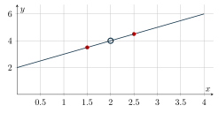
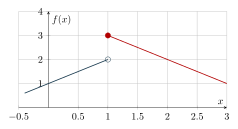
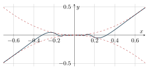
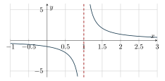
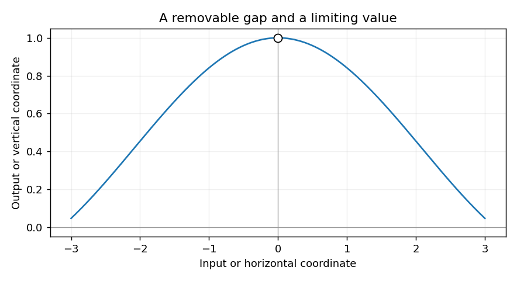

Limits and Continuity
Chapter overview. Calculus begins by asking what a
quantity approaches when its input gets close to a value. This question
is more subtle than evaluating a formula at a point: a function may be
undefined there, or its assigned value may disagree with its nearby
behavior. Limits give us a rigorous language for such behavior;
continuity tells us when the limiting and actual values agree. In
Chapter 3, these ideas become the foundation of the derivative.
Learning outcomes. Students will (i) estimate limits
from tables and graphs while recognizing the limitations of numerical
evidence; (ii) distinguish one-sided and two-sided limits; (iii) apply
limit laws and algebraic techniques; (iv) interpret infinite limits and
end behavior; (v) understand and use the formal epsilon–delta
definition; (vi) classify discontinuities and apply the intermediate
value theorem; and (vii) investigate limits and continuity using
equivalent R and Python programs.
Visual concept investigation
A limit is not the value at the point
The assertion \(\lim_{x\to a}f(x)=L\) describes what happens at inputs near \(a\), not necessarily what happens at \(a\). In particular, \(f(a)\) may be undefined, may equal \(L\), or may differ from \(L\). A table with inputs approaching from both sides is a useful exploratory tool, but finite observations cannot establish a limit for all nearby inputs.

Guided investigation. Explain why \(\lim_{x\to0}\sin(x)/x=1\) is consistent with the expression being undefined at zero. What extra statement is required for continuity?
Interactive investigation: One-sided limits
Approaching a value: the idea of a limit
Near a point is not necessarily at the point
Suppose a sensor measures the average rate of change of a position function \(s(t)\) between times \(t=2\) and \(t=2+h\). For \(s(t)=t^2\), the average rate is \[\frac{s(2+h)-s(2)}{h}=\frac{(2+h)^2-4}{h}=4+h,\qquad h\ne0.\] As \(h\) approaches zero, this rate approaches \(4\). The expression is not defined at \(h=0\), yet its nearby values have a clear limiting behavior. This is precisely why limits matter.
Definition. We write \(\lim_{x\to a}f(x)=L\) when the values of \(f(x)\) approach \(L\) as \(x\) approaches \(a\) from either side, with \(x\ne a\). The limit depends on nearby values, not necessarily on \(f(a)\).
Example — A hole does not prevent a limit. Find \(\lim_{x\to2}\frac{x^2-4}{x-2}\).
Solution. For \(x\ne2\), factor and cancel: \(\frac{(x-2)(x+2)}{x-2}=x+2\). Therefore the limit is \(4\). The original expression is undefined at \(x=2\); substituting directly would yield \(0/0\), which is an indeterminate form, not a numerical answer.

Tables are evidence, not proofs
A table may suggest a limit, but a finite set of sample points cannot prove one. The function \(g(x)=\sin(\pi/(x-2))\) oscillates infinitely often near \(x=2\); even very fine sampling can misrepresent its behavior. A table can also suffer from rounding or floating-point cancellation.
Example — A numerical table. Estimate \(\lim_{h\to0}\frac{\sqrt{9+h}-3}{h}\) and verify algebraically.
Solution. Multiply numerator and denominator by the conjugate: \[\frac{\sqrt{9+h}-3}{h}=\frac{1}{\sqrt{9+h}+3},\qquad h\ne0.\] The limit is \(1/6\). Numerically, the original quotient becomes unreliable for extremely small \(h\) because it subtracts nearly equal numbers; the rationalized form is stable.
One-sided limits
Definition. The left-hand limit \(\lim_{x\to a^-}f(x)\) describes approach through \(x<a\); the right-hand limit \(\lim_{x\to a^+}f(x)\) describes approach through \(x>a\). A finite two-sided limit exists exactly when both one-sided limits exist and agree.
Example — Different one-sided limits. Let \(f(x)=\begin{cases}x+1,&x<1,\\4-x,&x\ge1.\end{cases}\) Determine the one-sided limits and \(\lim_{x\to1}f(x)\).
Solution. Approaching from the left gives \(2\); from the right gives \(3\). Since \(2\ne3\), the two-sided limit does not exist, even though \(f(1)=3\).

Limit laws and algebraic techniques
Theorem — Limit laws. If \(\lim_{x\to a}f(x)=L\) and \(\lim_{x\to a}g(x)=M\) are finite, then \[\lim(f\pm g)=L\pm M,\quad \lim(fg)=LM,\quad\lim\frac{f}{g}=\frac LM\ \text{if }M\ne0.\] For a continuous function \(\phi\) at \(L\), \(\lim_{x\to a}\phi(f(x))=\phi(L)\).
These laws justify substitution for polynomials and rational functions at points where the denominator is nonzero. When direct substitution gives \(0/0\), the laws do not themselves determine the answer; algebraic work is needed.
Factoring, rationalizing, and common denominators
Example — A factored polynomial quotient. Evaluate \(\lim_{x\to3}\frac{x^2-9}{x^2-4x+3}\).
Solution. Factor numerator and denominator: \[\frac{(x-3)(x+3)}{(x-3)(x-1)}=\frac{x+3}{x-1}\quad(x\ne3).\] The limit is \(6/2=3\). Cancellation is valid for nearby \(x\ne3\) and does not assert equality at the excluded point.
Example — A nested fraction. Evaluate \(\lim_{x\to0}\frac{\frac{1}{1+x}-1}{x}\).
Solution. Combine the numerator: \(\frac{1}{1+x}-1=-\frac{x}{1+x}\). For \(x\ne0\), the quotient equals \(-1/(1+x)\), so the limit is \(-1\).
Example — Rationalization. Find \(\lim_{x\to0}\frac{\sqrt{4+x}-2}{x}\).
Solution. Multiply by the conjugate to obtain \(1/(\sqrt{4+x}+2)\) for \(x\ne0\). The limit is \(1/4\).
Trigonometric limits
The fundamental trigonometric limit (with angles in radians) is \[\lim_{x\to0}\frac{\sin x}{x}=1.\] It follows geometrically from comparisons of areas in the unit circle and can also be established using the squeeze theorem.
Example — A scaled sine quotient. Evaluate \(\lim_{x\to0}\frac{\sin(5x)}{3x}\).
Solution. Write \(\frac{\sin(5x)}{3x}=\frac53\frac{\sin(5x)}{5x}\). The second factor approaches \(1\), giving \(5/3\).
Example — Cosine cancellation. Find \(\lim_{x\to0}\frac{1-\cos x}{x^2}\).
Solution. Use \(1-\cos x=2\sin^2(x/2)\): \[\frac{1-\cos x}{x^2}=\frac12\left(\frac{\sin(x/2)}{x/2}\right)^2\longrightarrow\frac12.\]
The squeeze theorem and oscillation
Theorem — Squeeze theorem. If \(g(x)\le f(x)\le h(x)\) for all \(x\) sufficiently near \(a\) (except possibly at \(a\)), and \(\lim_{x\to a}g(x)=\lim_{x\to a}h(x)=L\), then \(\lim_{x\to a}f(x)=L\).
Example — Oscillation with shrinking amplitude. Determine \(\lim_{x\to0}x^2\sin(1/x)\), where the expression is defined for \(x\ne0\).
Solution. Because \(-1\le\sin(1/x)\le1\), we have \(-x^2\le x^2\sin(1/x)\le x^2\). Both bounds approach zero; hence the limit is zero. The inner oscillation does not have a limit, but its amplitude vanishes.

A precise definition: epsilon and delta
The intuitive phrase “gets close” is useful but not a proof. The following definition quantifies how close the input must be to guarantee a desired accuracy in the output.
Definition — Epsilon–delta limit. For a function defined near \(a\), we say \(\lim_{x\to a}f(x)=L\) if for every \(\varepsilon>0\) there exists \(\delta>0\) such that \[0<|x-a|<\delta\quad\Longrightarrow\quad |f(x)-L|<\varepsilon.\] The requirement \(0<|x-a|\) excludes the point \(a\) itself.
Example — Proof for a linear function. Prove \(\lim_{x\to2}(3x-1)=5\).
Solution. Given \(\varepsilon>0\), choose \(\delta=\varepsilon/3\). Whenever \(0<|x-2|<\delta\), we have \[|(3x-1)-5|=3|x-2|<3\delta=\varepsilon.\] Therefore the limit is \(5\).
Example — Proof for a quadratic. Prove \(\lim_{x\to2}x^2=4\).
Solution. We need \(|x^2-4|=|x-2||x+2|<\varepsilon\). First restrict \(|x-2|<1\), so \(1<x<3\) and \(|x+2|<5\). Choose \(\delta=\min\{1,\varepsilon/5\}\). Then \(0<|x-2|<\delta\) implies \(|x^2-4|<5\delta\le\varepsilon\).
Remark. In an epsilon–delta proof, \(\delta\) may depend on \(\varepsilon\) and on the fixed point \(a\), but not on the variable input \(x\). A numerical plot cannot establish this universal condition.
Infinite limits and vertical asymptotes
When a function increases without bound near a point, we write \(\lim_{x\to a}f(x)=+\infty\); this is not a finite real-number limit. Left and right behavior may differ.
Example — One-sided infinite behavior. Examine \(f(x)=1/(x-1)\).
Solution. As \(x\to1^+\) the denominator is positive and approaches zero, so \(f(x)\to+\infty\). As \(x\to1^-\) it is negative and approaches zero, so \(f(x)\to-\infty\). The line \(x=1\) is a vertical asymptote.

Infinite limits versus very large finite values
A computer displays finite floating-point numbers. Near an asymptote it may show very large values or overflow, but neither outcome proves the mathematical limit. We must examine signs, denominator behavior, and one-sided approach.
Limits at infinity and horizontal asymptotes
The notation \(x\to\infty\) means that \(x\) becomes arbitrarily large, not that it approaches a real input. A horizontal asymptote \(y=L\) is suggested by a finite limit \(\lim_{x\to\infty}f(x)=L\) or \(\lim_{x\to-\infty}f(x)=L\).
Example — Dominant powers. Find \(\lim_{x\to\infty}\frac{3x^2-2x+1}{x^2+5}\).
Solution. Divide by \(x^2\): \[\frac{3-2/x+1/x^2}{1+5/x^2}\longrightarrow3.\] Thus \(y=3\) is a horizontal asymptote as \(x\to+\infty\) (and also as \(x\to-\infty\)).
Example — Different behavior at the two ends. Find the limits of \(f(x)=x/\sqrt{x^2+1}\) as \(x\to\pm\infty\).
Solution. Write \(\sqrt{x^2+1}=|x|\sqrt{1+1/x^2}\). For positive \(x\), \(x/|x|=1\); for negative \(x\), \(x/|x|=-1\). The limits are \(1\) and \(-1\), respectively. Replacing \(\sqrt{x^2}\) by \(x\) without accounting for \(|x|\) would give the wrong negative-end limit.
Continuity and types of discontinuities
Definition. A function \(f\) is continuous at \(a\) if (1) \(f(a)\) is defined, (2) \(\lim_{x\to a}f(x)\) exists and is finite, and (3) \(\lim_{x\to a}f(x)=f(a)\). At endpoints of a domain, continuity uses the appropriate one-sided limit.
Example — Repairing a removable discontinuity. Define \(f(x)=\frac{x^2-1}{x-1}\) for \(x\ne1\). How should \(f(1)\) be defined to make \(f\) continuous at \(1\)?
Solution. For \(x\ne1\), \(f(x)=x+1\), so \(\lim_{x\to1}f(x)=2\). Defining \(f(1)=2\) fills the hole and makes the function continuous.
Removable, jump, infinite, and oscillatory discontinuities
A removable discontinuity occurs when the finite two-sided limit exists but the function value is missing or different. A jump occurs when finite one-sided limits disagree. An infinite discontinuity involves unbounded behavior; an oscillatory discontinuity involves failure to settle to a single value. These classifications guide how to interpret models and numerical plots.
Example — Classify a piecewise function. Let \(f(x)=\begin{cases}x^2,&x<2,\\c,&x=2,\\3x-2,&x>2.\end{cases}\) Find \(c\) so \(f\) is continuous at \(2\).
Solution. The left-hand limit is \(4\) and the right-hand limit is \(3(2)-2=4\). Thus the common limit is \(4\), and continuity requires \(c=4\).
Theorem — Algebra of continuous functions. Sums, products, and scalar multiples of functions continuous at \(a\) are continuous there. Quotients are continuous wherever the denominator is nonzero; compositions are continuous when the inner function is continuous at \(a\) and the outer function is continuous at the inner function’s value.
The intermediate value theorem and existence of roots
Theorem — Intermediate value theorem. If \(f\) is continuous on \([a,b]\) and \(N\) lies between \(f(a)\) and \(f(b)\), then there is some \(c\in[a,b]\) such that \(f(c)=N\).
The theorem guarantees existence, not uniqueness, and does not generally give an exact formula for the input \(c\).
Example — A root exists. Show that \(f(x)=x^3-x-1\) has a zero in \((1,2)\).
Solution. A polynomial is continuous. Since \(f(1)=-1\) and \(f(2)=5\), zero lies between the endpoint values. The intermediate value theorem guarantees at least one \(c\in(1,2)\) with \(f(c)=0\).
Bisection as a constructive companion
If a continuous function changes sign across \([a,b]\), repeatedly evaluate its midpoint and keep the half-interval with a sign change. After \(n\) halvings the bracket width is \((b-a)/2^n\); the midpoint error is at most half this width. Bisection requires a continuous function and a valid sign-changing bracket, but not a derivative.
Example — Three bisection iterations. Start with \(f(x)=x^3-x-1\) on \([1,2]\).
Solution. At \(1.5\), \(f=0.875>0\), so retain \([1,1.5]\). At \(1.25\), \(f=-0.296875<0\), so retain \([1.25,1.5]\). At \(1.375\), \(f=0.224609375>0\), so retain \([1.25,1.375]\). Its midpoint \(1.3125\) approximates the root with error at most \(0.0625\).
Computational laboratories: paired R and Python
The code in each laboratory answers the same mathematical question in both languages. Record inputs, compare numerical outputs, and explain whether the evidence supports a theorem, suggests a conjecture, or merely illustrates a result.
Laboratory 1: a removable discontinuity and numerical stability
Study \(q(h)=(\sqrt{9+h}-3)/h\) and its algebraically equivalent stable form \(1/(\sqrt{9+h}+3)\). For \(h\ne0\), both are equal mathematically, but floating-point arithmetic may distinguish them for very small \(h\).
R
h <- 10^(-seq(1, 14, by = 1))
naive <- (sqrt(9 + h) - 3) / h
stable <- 1 / (sqrt(9 + h) + 3)
results <- data.frame(h, naive, stable,
absolute_error = abs(naive - 1/6))
print(results, digits = 9)
plot(h, abs(naive - 1/6), log = "xy", pch = 19,
xlab = "h", ylab = "Absolute error")
points(h, abs(stable - 1/6), col = "red", pch = 1)Python
import numpy as np
import matplotlib.pyplot as plt
h = 10.0**(-np.arange(1, 15))
naive = (np.sqrt(9 + h) - 3) / h
stable = 1 / (np.sqrt(9 + h) + 3)
for hi, ni, si in zip(h, naive, stable):
print(f"h={hi:.1e}, naive={ni:.9f}, stable={si:.9f}")
plt.loglog(h, np.abs(naive - 1/6), "o", label="naive")
plt.loglog(h, np.abs(stable - 1/6), "s", label="stable")
plt.xlabel("h"); plt.ylabel("Absolute error")
plt.legend(); plt.show()Interpretation. Smaller \(h\) does not necessarily produce a more accurate computer answer. Rationalization avoids catastrophic cancellation. The mathematical limit remains \(1/6\).
Laboratory 2: one-sided limits and misleading plots
Investigate \(f(x)=1/(x-1)\) on intervals that stop short of the asymptote. Never connect points from opposite sides.
R
f <- function(x) 1/(x - 1)
left <- seq(-1, 0.95, length.out = 400)
right <- seq(1.05, 3, length.out = 400)
plot(left, f(left), type = "l", col = "navy",
xlim = c(-1, 3), ylim = c(-15, 15),
xlab = "x", ylab = "f(x)")
lines(right, f(right), col = "firebrick")
abline(v = 1, lty = 2)Python
import numpy as np
import matplotlib.pyplot as plt
for lo, hi in [(-1, 0.95), (1.05, 3)]:
x = np.linspace(lo, hi, 400)
plt.plot(x, 1/(x - 1))
plt.axvline(1, linestyle="--", color="gray")
plt.xlim(-1, 3); plt.ylim(-15, 15)
plt.xlabel("x"); plt.ylabel("f(x)"); plt.show()Laboratory 3: epsilon–delta visualization
For \(f(x)=x^2\) near \(a=2\), the proof uses \(\delta=\min\{1,\varepsilon/5\}\). Plot the horizontal band \(4\pm\varepsilon\) and vertical band \(2\pm\delta\).
R
epsilon <- 0.4
delta <- min(1, epsilon/5)
x <- seq(1.7, 2.3, length.out = 400)
plot(x, x^2, type = "l", col = "navy",
xlab = "x", ylab = "x^2")
abline(h = c(4-epsilon, 4+epsilon), col = "red", lty = 2)
abline(v = c(2-delta, 2+delta), col = "blue", lty = 2)
cat("epsilon =", epsilon, "delta =", delta, "\n")Python
import numpy as np
import matplotlib.pyplot as plt
epsilon = 0.4
delta = min(1, epsilon/5)
x = np.linspace(1.7, 2.3, 400)
plt.plot(x, x**2)
for y in (4-epsilon, 4+epsilon):
plt.axhline(y, linestyle="--", color="red")
for v in (2-delta, 2+delta):
plt.axvline(v, linestyle="--", color="blue")
plt.xlabel("x"); plt.ylabel("x^2"); plt.show()
print("epsilon =", epsilon, "delta =", delta)Interpretation. The picture illustrates the definition for a particular \(\varepsilon\). The proof must work for every positive \(\varepsilon\).
Laboratory 4: bisection and the intermediate value theorem
Find a root of \(x^3-x-1=0\) to within \(10^{-6}\) using a sign-changing bracket.
R
f <- function(x) x^3 - x - 1
a <- 1; b <- 2; tolerance <- 1e-6
while ((b-a)/2 > tolerance) {
m <- (a+b)/2
if (f(a)*f(m) <= 0) b <- m else a <- m
}
root <- (a+b)/2
cat("Root estimate:", format(root, digits = 12), "\n")
cat("Guaranteed error <=", (b-a)/2, "\n")
stopifnot(abs(f(root)) < 1e-4)Python
def f(x):
return x**3 - x - 1
a, b, tolerance = 1.0, 2.0, 1e-6
while (b-a)/2 > tolerance:
m = (a+b)/2
if f(a)*f(m) <= 0:
b = m
else:
a = m
root = (a+b)/2
print("Root estimate:", root)
print("Guaranteed error <=", (b-a)/2)
assert abs(f(root)) < 1e-4Real-world applications
Application 1: a threshold in a health screening rule
Suppose a screening policy assigns follow-up levels using \(R(s)=\begin{cases}1,&s<50,\\2,&s\ge50,\end{cases}\) where \(s\) is a numerical risk score. At \(s=50\) the classification jumps. The left-hand limit is \(1\), the right-hand limit is \(2\), and the function is discontinuous. This is a discontinuity in a decision rule, not necessarily a discontinuity in a patient’s underlying health. Students should distinguish mathematical properties of a policy from biological mechanisms.
Application 2: concentration approaching a background level
A stylized contaminant model is \(C(t)=C_{\mathrm{bg}}+C_0e^{-kt}\) for \(t\ge0\), with \(k>0\). Since \(e^{-kt}\to0\) as \(t\to\infty\), \(\lim_{t\to\infty}C(t)=C_{\mathrm{bg}}\). The limiting value is a long-run model prediction; finite-time measurements can approach it without ever equaling it exactly.
Example — Interpret the long-run concentration. If \(C(t)=2+18e^{-0.3t}\) in mg/L, find the initial concentration and long-run limit. When is the concentration within \(1\) mg/L of the background?
Solution. \(C(0)=20\) mg/L and \(\lim_{t\to\infty}C(t)=2\) mg/L. Solve \(18e^{-0.3t}\le1\), yielding \(t\ge\ln(18)/0.3\approx9.63\) time units. This is a threshold time, not the time at which the concentration becomes exactly \(2\).
Application 3: continuity in calibration
A laboratory instrument is modeled by \(V(T)=0.04T+0.8\) volts over its operating range. Because this is linear, small temperature changes produce small voltage changes, and the model is continuous. If a software interface rounds voltage to the nearest \(0.1\) V, however, the reported value becomes a step function. Distinguish the continuous physical response from the discontinuous digital display.
Chapter exercises
Directions. Give mathematical justification for analytical answers. For computational questions, include the same mathematical problem in R and Python, label plots, and interpret results in complete sentences. Unless otherwise stated, do not use derivative rules or L’Hôpital’s rule, which belong to later chapters.
A. Understanding limits
Explain why \(f(a)\) and \(\lim_{x\to a}f(x)\) can differ. Construct an explicit example.
Evaluate \(\lim_{x\to4}(3x^2-2x+1)\) and state which limit laws you use.
Evaluate \(\lim_{x\to-1}\frac{x^2-1}{x+1}\) and state the original domain restriction.
Determine \(\lim_{x\to0}\frac{\sqrt{16+x}-4}{x}\) by rationalization.
Evaluate \(\lim_{x\to2}\frac{x^2-4}{x^2-3x+2}\).
Evaluate \(\lim_{x\to0}\frac{\sin(7x)}{2x}\).
Evaluate \(\lim_{x\to0}\frac{1-\cos(3x)}{x^2}\).
Determine whether \(\lim_{x\to0}\sin(1/x)\) exists; explain without relying only on a graph.
Use the squeeze theorem to evaluate \(\lim_{x\to0}x\sin(1/x)\).
Construct a piecewise function with left limit \(-1\), right limit \(2\), and defined value \(5\) at zero.
B. Infinite limits and continuity
Find both one-sided limits of \(1/(x+2)\) at \(x=-2\).
Analyze \(\lim_{x\to\infty}\frac{4x^3-x}{2x^3+5}\).
Find the limits of \(x/\sqrt{x^2+9}\) as \(x\to\pm\infty\).
Classify the discontinuity of \(f(x)=\frac{x^2-9}{x-3}\) at \(x=3\) when \(f(3)\) is undefined.
Choose \(c\) so \(f(x)=\begin{cases}2x+1,&x<2,\\c,&x=2,\\x^2+1,&x>2\end{cases}\) is continuous at \(2\), or explain why no such \(c\) exists.
Prove using the definition that \(\lim_{x\to3}(2x+1)=7\).
Prove using epsilon–delta that \(\lim_{x\to1}x^2=1\).
State why the intermediate value theorem does not apply to \(f(x)=1/x\) on \([-1,1]\).
Prove that \(x^3-2x-2=0\) has at least one solution in \((1,2)\).
Find a continuous function on \([0,2]\) with more than one zero; explain why the intermediate value theorem does not guarantee uniqueness.
C. R/Python investigations
Generate a table for \(\frac{\sqrt{1+h}-1}{h}\) using \(h=10^{-1},\ldots,10^{-14}\). Compare direct and rationalized forms in both languages.
Plot \(f(x)=\sin(1/x)\) separately on \([-1,-0.01]\) and \([0.01,1]\). Explain why finite sampling cannot prove a limit exists or fails to exist.
For \(f(x)=x^2\) at \(a=3\), derive a valid \(\delta(\varepsilon)\) and illustrate the \(\varepsilon\)-band and \(\delta\)-band in both languages.
Implement bisection for \(x^3-x-1\) and record the number of iterations needed for tolerances \(10^{-2}\), \(10^{-4}\), and \(10^{-6}\).
Compare \(\frac{\sin h}{h}\) with its theoretical limit for progressively smaller positive \(h\); explain any eventual numerical deterioration.
Plot \(f(x)=\frac{x^2-4}{x-2}\) without filling the hole. Explain why a default graph may misrepresent the domain.
Investigate the limiting value of \(\frac{3x^2+1}{x^2+2}\) for \(x=10,10^2,10^3,10^4\); compare numerical evidence with an algebraic proof.
Modify the bisection program to return a table of iteration, left endpoint, right endpoint, midpoint, and residual. Interpret the interval-width bound.
D. Applications and mathematical communication
A contaminant follows \(C(t)=1.5+12e^{-0.2t}\). Find the long-run concentration and the time needed to come within \(0.5\) units of it.
A tiered billing rule charges \(B(q)=\begin{cases}4q,&0\le q\le10,\\40+6(q-10),&q>10.\end{cases}\) Determine whether it is continuous at \(q=10\). Explain why the rate of change may still shift abruptly.
Explain the difference between a discontinuous screening classification and a continuous underlying risk measurement. Provide a labeled mathematical example.
Critique this claim: “The computer evaluated the function at \(x=2.000001\), so the limit at \(2\) has been proved.”
Design a real-world model with a removable discontinuity caused by a formula’s representation rather than a physical jump. Explain how to repair it.
Describe a setting in which a horizontal asymptote has a meaningful physical interpretation and one in which extrapolating to infinity would be unreasonable.
Concluding project: threshold behavior and long-run concentration
Project question. How can a smooth physical process produce a discontinuous reported classification, and how can limits and continuity help us interpret both models?
Scenario
An environmental monitoring system reports a modeled concentration \[C(t)=2+18e^{-0.3t},\qquad t\ge0,\] where \(t\) is measured in hours and \(C\) in mg/L. A reporting rule assigns a category \[K(C)=\begin{cases}0,&C<5,\\1,&5\le C<10,\\2,&C\ge10.\end{cases}\] The concentration model is idealized; the categories are administrative thresholds rather than biological claims.
Required deliverables
Mathematical analysis (25 points). Find \(C(0)\), \(\lim_{t\to\infty}C(t)\), and the times at which \(C(t)\) crosses \(10\) and \(5\) mg/L. Show all logarithmic steps and verify units.
Continuity analysis (20 points). Prove that \(C\) is continuous for \(t\ge0\). Explain why \(K(C(t))\) has jumps and determine the one-sided category limits at each crossing time.
R implementation (15 points). Plot \(C(t)\) on \(0\le t\le15\) with horizontal threshold lines; plot the category function as a step graph without falsely connecting jumps.
Python implementation (15 points). Reproduce the same calculations and plots using NumPy and Matplotlib; compare the threshold times numerically.
Numerical investigation (10 points). Approximate one threshold crossing by bisection and report a justified error bound.
Interpretation and limitations (15 points). Write 400–600 words explaining what the model predicts, what the threshold categories do and do not mean, and how measurement noise might affect category changes.
Extension. Replace the exponential model with \(C(t)=2+18/(1+0.4t)\) and compare how quickly the two models approach the same long-run level. Discuss the limits of extrapolation.
Chapter summary and self-check
A limit describes nearby behavior independently of the function’s assigned value at the point. One-sided limits must agree for a finite two-sided limit to exist. Algebraic simplification, trigonometric identities, and the squeeze theorem provide tools for evaluation; the epsilon–delta definition supplies mathematical precision. Continuity links the limit to the function value. The intermediate value theorem guarantees that a continuous function attains intermediate outputs, and bisection turns this existence principle into a numerical approximation. Computer plots and tables are useful for exploration but do not replace proofs. Before proceeding to Chapter 3, check that you can: explain \(0/0\) as indeterminate; distinguish limits from values; construct an epsilon–delta proof for a linear function; recognize a jump and a removable discontinuity; and implement a reliable bisection algorithm in R and Python.
Graphical synthesis and reflective practice

Reflection. State what the graph demonstrates, what it does not establish, and how you would verify the corresponding claim analytically. Identify the relevant units or mathematical assumptions before using a computer-generated result.